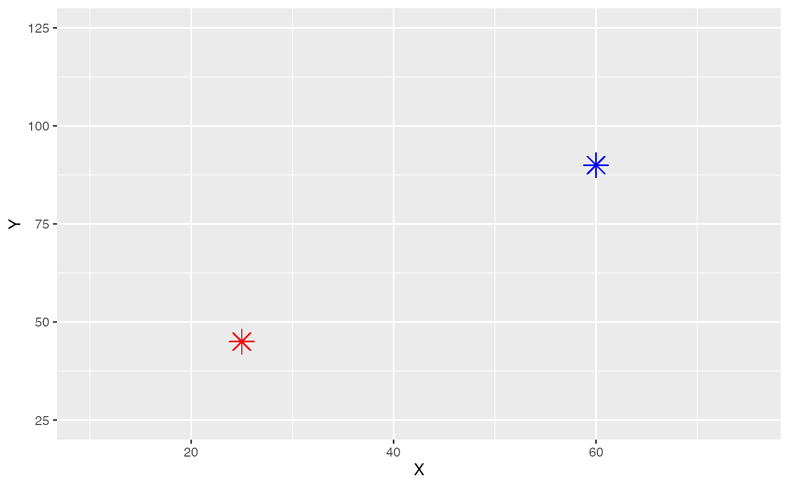

calc dist
calc_dist.Rmd##
## Attaching package: 'dplyr'## The following objects are masked from 'package:stats':
##
## filter, lag## The following objects are masked from 'package:base':
##
## intersect, setdiff, setequal, union
x <- seq(10, 75, 1)
y <- seq(25, 125, 1)
xy <- expand.grid(x, y)
print(head(xy))## Var1 Var2
## 1 10 25
## 2 11 25
## 3 12 25
## 4 13 25
## 5 14 25
## 6 15 25
df <- data.frame(X=xy[,1], Y=xy[,2])
print(head(df))## X Y
## 1 10 25
## 2 11 25
## 3 12 25
## 4 13 25
## 5 14 25
## 6 15 25
# df$X <- xy[,1]
# df$Y <- xy[,2]
point1 <- c(25, 45)
point2 <- c(60, 90)
fig <- ggplot(df, aes(x = X, y = Y)) +
geom_point(alpha = 0)
fig +
geom_point(aes(x = point1[1], y = point1[2]), shape = 8, size = 5, color = "red") +
geom_point(aes(x = point2[1], y = point2[2]), shape = 8, size = 5, color = "blue")
calc_dist_from_point <- function(pointx, pointy, gridx, gridy) {
return(sqrt((pointx - gridx)^2 + (pointy - gridy)^2))
}
df$dist1 <- apply(df, 1, function(row) calc_dist_from_point(point1[1], point1[2], row[1], row[2]))
df$dist2 <- apply(df, 1, function(row) calc_dist_from_point(point2[1], point2[2], row[1], row[2]))
df$val <- apply(df, 1, function(row) which.min(c(row['dist1'], row['dist2'])))
df_pivot <- pivot_wider(df, id_cols = Y, names_from = X, values_from = val)
print(df_pivot)## # A tibble: 101 × 67
## Y `10` `11` `12` `13` `14` `15` `16` `17` `18` `19` `20` `21`
## <dbl> <int> <int> <int> <int> <int> <int> <int> <int> <int> <int> <int> <int>
## 1 25 1 1 1 1 1 1 1 1 1 1 1 1
## 2 26 1 1 1 1 1 1 1 1 1 1 1 1
## 3 27 1 1 1 1 1 1 1 1 1 1 1 1
## 4 28 1 1 1 1 1 1 1 1 1 1 1 1
## 5 29 1 1 1 1 1 1 1 1 1 1 1 1
## 6 30 1 1 1 1 1 1 1 1 1 1 1 1
## 7 31 1 1 1 1 1 1 1 1 1 1 1 1
## 8 32 1 1 1 1 1 1 1 1 1 1 1 1
## 9 33 1 1 1 1 1 1 1 1 1 1 1 1
## 10 34 1 1 1 1 1 1 1 1 1 1 1 1
## # … with 91 more rows, and 54 more variables: `22` <int>, `23` <int>,
## # `24` <int>, `25` <int>, `26` <int>, `27` <int>, `28` <int>, `29` <int>,
## # `30` <int>, `31` <int>, `32` <int>, `33` <int>, `34` <int>, `35` <int>,
## # `36` <int>, `37` <int>, `38` <int>, `39` <int>, `40` <int>, `41` <int>,
## # `42` <int>, `43` <int>, `44` <int>, `45` <int>, `46` <int>, `47` <int>,
## # `48` <int>, `49` <int>, `50` <int>, `51` <int>, `52` <int>, `53` <int>,
## # `54` <int>, `55` <int>, `56` <int>, `57` <int>, `58` <int>, `59` <int>, …
ggplot(df_pivot, aes(x = X, y = Y, fill = factor(value))) +
geom_tile(color = "white", size = 0.25) +
scale_fill_manual(values = c("0" = "seagreen3", "1" = "red3")) +
theme_void() +
labs(title = "Values")## Warning: Using `size` aesthetic for lines was deprecated in ggplot2 3.4.0.
## ℹ Please use `linewidth` instead.## Error in `geom_tile()`:
## ! Problem while computing aesthetics.
## ℹ Error occurred in the 1st layer.
## Caused by error in `FUN()`:
## ! object 'X' not found